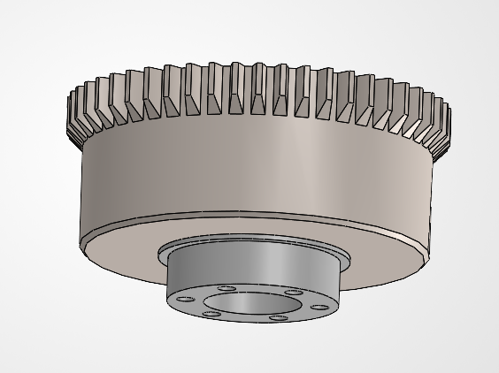
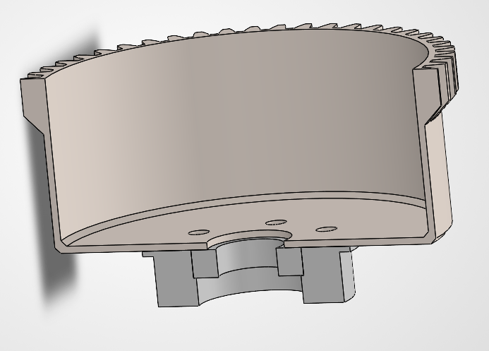
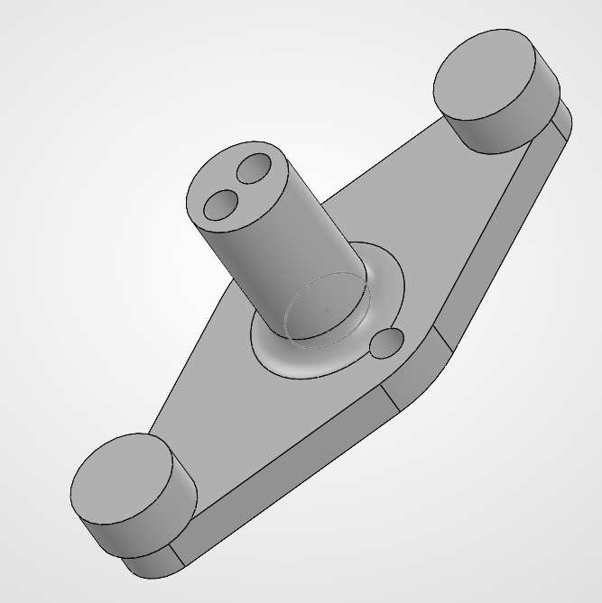
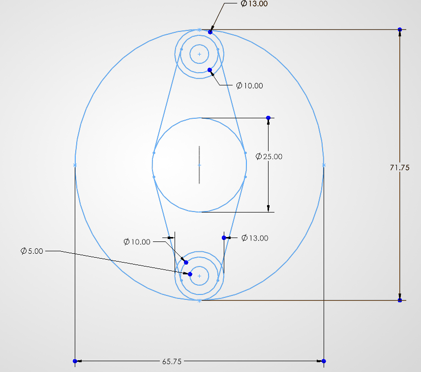

Strain Wave Gearbox
Theory and Background
Mechanical Design
All of the CAD design on this project was done in SolidWorks. As stated earlier, the reduction of the gearbox is proportional to the tooth difference between the inner and outer splines. This design uses a 52 tooth outer spline with a 50 tooth flexspline, giving a reduction of 25:1 in this form factor. The wave generator is designed by adding the 2 times the gear module to the bore axis of the inner flexspline. This gives the bearing surface for the deformation, deforming by one tooth width in each direction along the major axis and providing the transfer points. My design utilizes a single roller bearing, but due to the ANSYS simulation results I may upgrade this to 3 per side to distribute the force more evenly.
Flexspline

The flexspline itself will be printed from 60A TPU, a more rigid form than the standard 95A durometer rating. This component has an extremely high factor of safety around 80, rating it well for sustained loading. The flexspline handles the power transmission to the output shaft, but is itself flexible and designed to deform. Therefore, I have designed a PLA cup to bolt onto the base of the flexspline. Since PLA is many times more rigid than TPU, this makes it much better suited to a power transmission interface. There are 6 M4 heat-set inserts in the output shaft, to allow attachment of many different couplers.

Wave Generator

Test Text

Finite Element Analysis
| Metric | Value |
|---|---|
| Result Type | Total Deformation |
| Peak Deformation | 1.0195 mm |
| Simulation Time | 100 ms |
| Angular Engagement | 36 degrees |
| Force Application | Ramp In |
ANSYS Transient Structural Deformation Results.
| Metric | Value |
|---|---|
| Result Type | Equivalent (von Mises) Stress |
| Peak Stress | 96.8 kPa |
| Minimum Stress | 0.2 Pa |
| Factor of Safety | 80 |
| Simulation Time | 100 ms |
ANSYS Transient Structural Stress Results.